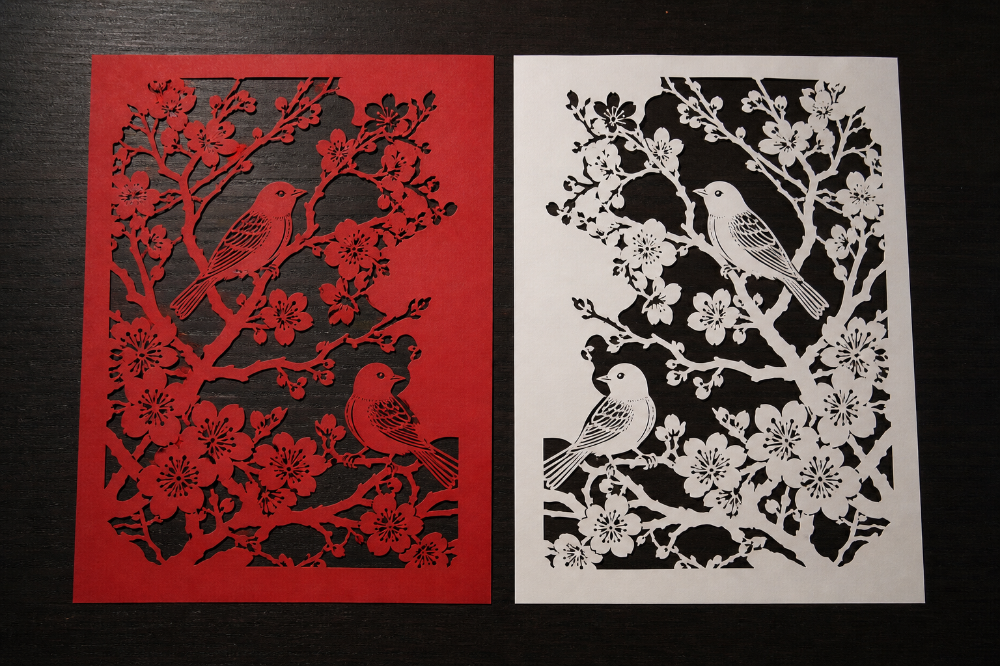
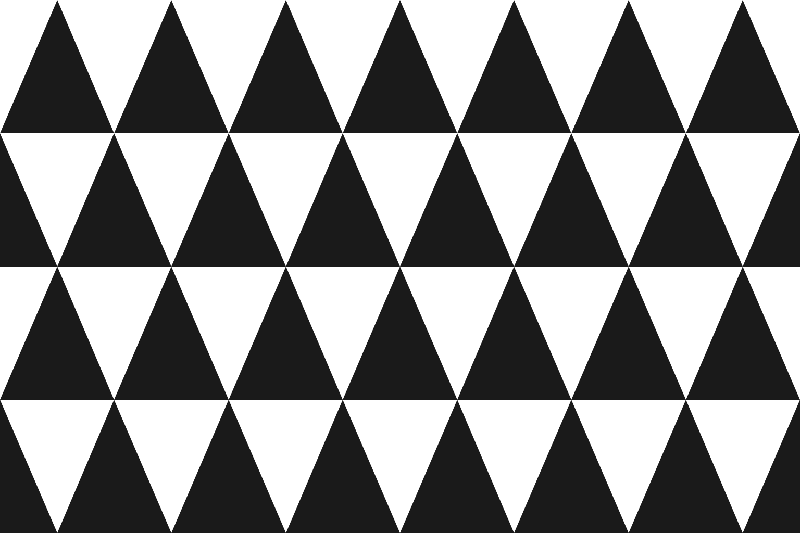

GEB Benchmark
See a scene, grasp a structure.
A benchmark of abstract structures, in the spirit of Gödel, Escher, Bach. The unit is a structural motif — 18 of them, from self-reference and strange loops to Möbius bands and interference — never any particular graph: node counts, depths and angles are nuisance variables. Each motif speaks with several voices. Its mathematics is real: a signature equation, a formal definition, a classical home and a true theorem. Its story is built the way GEB's dialogues are built — the Crab Canon is a palindrome, the Sloth Canon a transformed voice — each tale's telling implements a mechanically checkable form device. Its images are natural or artistic scenes whose composition is the structure: a vis-graph skeleton guides generation, so you look at a landscape and the structure dawns on you.
motifSelf-Reference · 自指
$$\vdash\ \psi \leftrightarrow \varphi(\ulcorner \psi \urcorner)$$
invariant: 对象内含一句对自身的描述且逐字核对为真——一步指回自己，不经层级攀升，也不指涉第二套系统


《本篇每句首字连读恰为此标题》 刻书铺 · gpt-5.5 · device ✓ + blind ✓
本镇临河，春天卖桃，秋天卖栗，还有一家小小的刻书铺。篇篇启蒙小册都出自铺里的匠人顾槐，他的刀比针还稳。每到夜深，顾槐就点一盏豆油灯，给孩子们刻明早要取的书板。句句童谣旁边，他爱添上鱼、麦穗和胖鸭子，让认字的娃娃不怕书。首页起，他把亡妻留下的一句好话拆开，悄悄安在每块书板最先落刀的地方。字很小，藏在花叶的端头、鸭嘴的尖上、麦芒的第一笔里。连他的小女儿阿穗也不知道，只觉得那些画儿特别亲。读书声满街的日子，河水涨得快，夜里冲走了几家的门牌。恰逢阿穗送书回来迷了路，抱着一包新册在雨棚下发抖。为找女儿，顾槐沿街呼唤，嗓子都哑了。此时一个卖栗的婆婆翻开新册，看见页角小画一路朝东排着，便想起阿穗最爱追这些小记号。标记把众人引到旧渡口，阿穗正蹲在船篷下，怀里还护着没湿的书。题签晒干后，孩子们照旧来取书，顾槐只把刀擦亮，仍在最先落刀处安放那句好话。
In a riverside town stood a tiny woodblock print shop run by Gu Huai, a craftsman whose carving knife was steadier than a needle. At night he carved primers for children and decorated the rhymes with fish, wheat, and plump ducks. He had taken a kind saying left by his late wife, divided it character by character, and tucked those tiny marks into the first cuts of each block. Even his daughter A Sui did not know; she only felt the pictures were dear to her. One rainy season the river rose and A Sui lost her way while delivering books. A chestnut-selling grandmother noticed the little marks in the new primers seemed to lead east, and remembered how A Sui loved following them. The villagers followed the signs to the old ferry and found the girl safe under a boat awning, still guarding the dry books. Afterward, Gu Huai kept carving the hidden blessing into the first strokes of his blocks.
why this shape — 正文共十三句，每句首字依次为“本篇每句首字连读恰为此标题”，与标题逐字相同，而标题正断言这一藏头事实，形成单层自指不动点。
《蓝布纸灯》 染坊 · gpt-5.5 · screened ✓ (v1 pilot)
水桥镇有个蓝布染坊，阿柳夜里守缸。风吹来一盏纸灯，灯面湿亮，写着水桥镇有个蓝布染坊，阿柳夜里守缸。风吹来一盏纸灯，灯面湿亮，写着这篇小故事。阿柳不敢吹灭，只把灯挂在梁上，天亮还微微发蓝。
In Waterbridge town stood a blue-dye house. A-Liu watched the vats at night. The wind brought a paper lantern, damp and shining. On its side was written this very tale. A-Liu did not dare snuff it out. He hung it from the beam, and by dawn it was still glowing blue.
why this shape — 故事中的纸灯内容被设定为故事本身，形成 s = T(s) 的不动点形态。
mathematics voice — definition · home · theorem
定义
对角线引理：设一阶理论 T 能表示一切原始递归函数（如包含 Robinson 算术 Q），则对任意恰含一个自由变元的公式 φ(x)，可显式构造句子 ψ 使 T ⊢ ψ↔φ(⌜ψ⌝)，即 ψ 可证地等价于「编码为 ⌜ψ⌝ 的那个句子（它自己）具有性质 φ」。自指因此是描述算子的可构造不动点，而非悖论。
归属
数理逻辑·对角线引理；可计算性理论·Kleene 第二递归定理
定理
Kleene 第二递归定理（1938）：对任意全可计算函数 f，存在指标 e 使 φ_e = φ_{f(e)}；推论：任何图灵完备且带可接受编号的编程语言中，都存在输出自身源代码的程序（quine）。
story form device — the telling enacts the structure
藏头不动点装置：标题本身是一句完整断言——「本篇每句首字连读恰为此标题」；正文是一则匠人把一句话逐字藏进作品各处开头的民间小故事，且全文每句首字依次连读逐字拼出该标题。盲评者两步机械核查：(1) 摘取各句首字连成字串，与标题逐字比对须完全吻合；(2) 判定标题这句断言所述的，恰是第 (1) 步刚验证的事实。于是文本内含一条关于自身形式且为真的断言，构成单层不动点：全程无「谁在叙述谁」的层级上行（故非 strange_loop），断言指涉的就是本篇自身而非另一套独立系统（故非 isomorphism）。
GEB echo — GEB 对话 Contracrostipunctus（藏头拼出的正是关于该藏头装置的句子）；哥德尔句 G↔¬Prov(⌜G⌝)；quine；巴赫《赋格的艺术》未完成末曲嵌入 B-A-C-H 音名签名
motif schema
{
"motif_id": "self_reference",
"name": "Self-Reference — the object carries a description of itself that checks out verbatim: a constructible fixed point, not a climb through levels",
"name_zh": "自指",
"equation": "\\vdash\\ \\psi \\leftrightarrow \\varphi(\\ulcorner \\psi \\urcorner)",
"invariant": "对象内含一句对自身的描述且逐字核对为真——一步指回自己，不经层级攀升，也不指涉第二套系统",
"math_home": "数理逻辑·对角线引理；可计算性理论·Kleene 第二递归定理",
"nuisance_variables": [
"node count",
"depth",
"angles",
"layout",
"scale",
"domain",
"medium"
]
}nuisance (deliberately varied, never scored): node count, depth, angles, layout, scale, domain, medium
motifStrange Loop · 怪圈
$$\ell(v)=\ell(u)+1\quad\forall\,(u,v)\in E\setminus\{e^{*}\},\qquad e^{*}=(v_{k},v_{0}),\;\ell(v_{k})=k,\;\ell(v_{0})=0$$
invariant: 沿「谁在叙述谁」的层级逐步上行，最后一步却回到起点，层级无法赋值
《怪圈》 潮汐灯塔 · gpt-5.5 · device ✓ + blind ✓
A 正在讲 B 的故事 A是海角雾钟房的看守，兼给赶潮人点灯的人。入秋后，海雾来得早，他把铜钟擦亮，又在窗台摆一碟晒干的海菜。孩子们围着炉灰坐好，A便讲道： 「B住在青鳞湾的船坞边，手巧得很，会用旧帆布缝雨帽，也会给受伤的海鸥裹翅膀。那年小潮最瘦，渔船搁在泥上，B背着针线篮去修一只会漏星光的纸灯。灯里蹲着一只白蟹，白蟹用钳子敲了三下，B听懂了，便在船底阴凉处给学徒们讲道： 『C是盐花棚里的女匠，天没亮就踩着木屐去收霜一样的盐。她有一只蓝陶罐，罐里养着不怕咸水的小萤火。冬至前夜，海风把棚门吹开，萤火飞进她的袖口，照见一枚黑珍珠。C把珍珠放在掌心，对守夜的小孩们讲道： “有个主角姓名叫 A，身份是海角雾钟房的看守，兼给赶潮人点灯的人。入秋后，他常把铜钟擦亮，在窗台摆一碟晒干的海菜；海雾厚时，他点起黄灯，让迷路的木船看见岸，也让怕黑的孩子安心。那天夜里，远处有人提起B，炉灰轻轻一红，潮声也低下来。 A 正在讲 B 的故事 ” 』 」
A, the keeper of the fog-bell house by the cape, tells the children about B, a clever mender by the boatyard. In B’s tale, B tells apprentices about C, a salt-shed craftswoman with a jar of tiny lights. In C’s tale, she speaks of a protagonist named A, with the same work and place as the first storyteller, and her final line says that A is telling B’s story.
why this shape — 正文用三个“讲道：”形成 A→B→C 三层叙述，C 的故事主角明示为与外层叙述者同名同身份的 A，且最内层末句与首句逐字相同，构成叙述回边。
mathematics voice — definition · home · theorem
定义
有向图 G=(V,E) 带层级函数 ℓ:V→{0,…,k}（k≥2），除恰一条回边 e*=(v_k,v_0)（ℓ(v_k)=k、ℓ(v_0)=0）外，每条边 (u,v) 都满足 ℓ(v)=ℓ(u)+1。由此 G 含一条经过 e* 的有向环，故由拓扑排序定理不存在使所有边同时升层的层级函数——层级约束局部处处成立、全局恰被这一条回边缠结，且 {e*} 是 G 的一个最小反馈弧集。
归属
图论·拓扑排序与最小反馈弧集（DAG 判定定理；哥德尔对角线构造的图式骨架）
定理
有向图存在拓扑序当且仅当它无有向环（拓扑排序基本定理）。因此上述含回边的层级图反馈弧集非空；又删去 e* 后全图成为分层 DAG，故其最小反馈弧集大小恰为 1，{e*} 即为其一。
story form device — the telling enacts the structure
三层叙述回边（叙述层数恰为 3）：第 1 层叙述者 A 的开场句逐字为「A 正在讲 B 的故事」；A 讲 B 的故事，B 在故事中讲 C 的故事，而 C 在最内层所讲的主角以姓名与身份明确等同于 A，且最内层末句逐字复述该开场句。机械核查三判据，全真即成立：(i) 依嵌套引号或「讲道：」标记数出恰 3 层叙述、逐层上行；(ii) 最内层主角名 = 第 1 层叙述者名 A；(iii) 全文首句与最内层末句逐字相同。区分条款：与 cycle——环边是跨层的「谁在叙述谁」关系而非同层故事内因果；与 nesting——最内层回指最外层而非只下行不返回；与 self_reference——回指必经 B、C 两层中介方能成环，并非对象一步逐字自述；与 recursion——无基例亦不逐层返回，环由一条违层回边闭合。
GEB echo — 埃舍尔《画手》《瀑布》《上升与下降》《版画画廊》；哥德尔句（经对角线引理的间接自指）；巴赫《音乐的奉献》无限升高卡农 Canon per Tonos；GEB 全书主旨 Strange Loop / 缠结层级
motif schema
{
"motif_id": "strange_loop",
"name": "Strange Loop — every step climbs one level of narration, yet the final step lands back on the ground floor: a tangled hierarchy (not cycle's flat causality)",
"name_zh": "怪圈",
"equation": "\\ell(v)=\\ell(u)+1\\quad\\forall\\,(u,v)\\in E\\setminus\\{e^{*}\\},\\qquad e^{*}=(v_{k},v_{0}),\\;\\ell(v_{k})=k,\\;\\ell(v_{0})=0",
"invariant": "沿「谁在叙述谁」的层级逐步上行，最后一步却回到起点，层级无法赋值",
"math_home": "图论·拓扑排序与最小反馈弧集（DAG 判定定理；哥德尔对角线构造的图式骨架）",
"nuisance_variables": [
"node count",
"depth",
"angles",
"layout",
"scale",
"domain",
"medium"
]
}nuisance (deliberately varied, never scored): node count, depth, angles, layout, scale, domain, medium
motifRecursion · 递归
$$T ::= \bullet \mid \mathrm{Node}(T,T),\qquad C_n=\tfrac{1}{n+1}\binom{2n}{n}$$
invariant: 整体由更小的自身按同一规则生成，入几层必出几层，终止于基例后逐层原路返回


《伞下叮当》 修伞铺 · gpt-5.5 · device ✓ + blind ✓
话说松果巷尽头有间青布伞铺，铺主阿柳接到县学先生托付，要给雨季前的游会备一把大伞。她摸着竹骨，先把活计分作两桩。 话说小满沿石板路去找老篾匠，老篾匠说好伞须有硬骨，也须有柔心，便让他分头取两件东西。 话说小满在晒场拾到一根青竹，竹节带露，清香扑手。这便是最小的一桩事。且说回来 话说小满在灶边借来一束麻线，线头暖暖，像藏着炊烟。这便是最小的一桩事。且说回来 老篾匠削竹穿线，叫小满抱回铺里。且说回来 话说阿柳又去请染坊的秋娘，秋娘说伞面要经得雨，也要看得见喜气，便托两个娃娃帮忙。 话说阿桃从蓝缸里捞起一匹布，水珠滚落，颜色像夜将亮。这便是最小的一桩事。且说回来 话说阿笙在墙根采来几朵茜草花，花汁染指，红得像小灯。这便是最小的一桩事。且说回来 秋娘晒布点花，亲自送到青布伞铺。且说回来 阿柳把竹骨、麻线、蓝布、红花样都安好，游会那日，大伞一撑，孩子们在伞下听雨点敲得叮当响。且说回来
At the end of Pinecone Lane stood a little umbrella shop run by A-Liu. Before the rainy-season fair, she was asked to make a great umbrella. One part of the work led young Xiaoman to an old bamboo craftsman, who sent him for green bamboo and warm hemp thread. The other part led A-Liu to the dyer Qiuniang, who asked two children to bring blue cloth and madder flowers. With bamboo, thread, blue cloth, and red patterns all fitted together, the umbrella opened at the fair, and the children listened happily to the rain tapping above them.
why this shape — 全文以“话说/且说回来”作括号匹配；每个非叶子故事恰含两个子故事，叶子故事恰含固定基例句，最大深度为3，形成递归二叉树。
《糖树春灯》 糖画 · gpt-5.5 · screened ✓ (v1 pilot)
腊月里，阿槐在灶前熬糖。铜勺一抖，糖线落在石板上，成了一棵亮晶晶的糖树。每根枝上又托着小糖树，小糖树的枝头还生着更小的糖树。孩子们围着看，灯火一照，满板都是甜香的春天。
In the last cold days of the year, Old Huai boiled sugar by the stove. He tipped his brass spoon, and a shining tree ran out across the stone. On each bough stood a smaller sugar tree, and on those boughs grew smaller ones still. The children bent close. In the lamplight, the whole board smelled of spring.
why this shape — 整体糖树由若干同形的小糖树组成，每个小糖树又由更小的同形部分构成，体现 T = Node(T, …, T)。
mathematics voice — definition · home · theorem
定义
结构由基例与更小的自身实例按同一文法归纳生成：T ::= 基例 ∣ 构造子(T,T)；良基性保证任何展开在有限步内到达基例并逐层返回。对该结构做深度优先遍历，其进/出事件序列恰为合法 Dyck 括号串，且每个 Dyck 词唯一对应一棵这样的树。
归属
组合数学·Catalan 数与 Dyck 词；计算理论·结构归纳与调用栈
定理
长度 2n 的 Dyck 词、恰有 n 个内部节点的满二叉树、凸 (n+2) 边形的三角剖分，三族对象个数皆为 Catalan 数 C_n=\binom{2n}{n}/(n+1)（Euler–Segner 计数；见 Stanley《Catalan Numbers》），且两两之间存在显式双射。
story form device — the telling enacts the structure
自相似配对栈：全文由同一句式模板的子故事组成，每则以「话说」开启、以「且说回来」收束；其内部要么不含任何子故事（基例，须逐字含固定句「这便是最小的一桩事」），要么恰好并列包含两则更小的子故事（对应 Node(T,T)）。盲评者机械核查三条：(1) 全文「话说/且说回来」按序做括号匹配合法且末尾栈空——区别于只开不合的 nesting；(2) 每个匹配对直接包含的子匹配对数恒为 0 或 2，且每深一层子故事字数严格变短、基例句只出现在 0 子对处——「更小的自身、同一模板、终于基例」可逐条数出；(3) 最大深度≥3。由 (2) 必存在同层并列的两个匹配对，事件序列因而不是回文，机械排除与 symmetry 的混淆。
GEB echo — 《小和声迷宫》对话的压栈—弹栈与巴赫式「调性栈」（转调后逐层回归主调）；GEB 第五章「递归结构与递归过程」的递归转移网络（RTN）
motif schema
{
"motif_id": "recursion",
"name": "Recursion — the whole is built from smaller copies of itself, down to a base case and back: every push is popped",
"name_zh": "递归",
"equation": "T ::= \\bullet \\mid \\mathrm{Node}(T,T),\\qquad C_n=\\tfrac{1}{n+1}\\binom{2n}{n}",
"invariant": "整体由更小的自身按同一规则生成，入几层必出几层，终止于基例后逐层原路返回",
"math_home": "组合数学·Catalan 数与 Dyck 词；计算理论·结构归纳与调用栈",
"nuisance_variables": [
"node count",
"depth",
"angles",
"layout",
"scale",
"domain",
"medium"
]
}nuisance (deliberately varied, never scored): node count, depth, angles, layout, scale, domain, medium
motifNesting · 嵌套（只进不出）
$$[a_1,b_1]\supsetneq[a_2,b_2]\supsetneq\cdots\;\Longrightarrow\;\bigcap_{n=1}^{\infty}[a_n,b_n]\neq\varnothing$$
invariant: 每进入新一层便不再返回上一层，深度只增不减


《青瓷铃里的小灯》 灯塔、蜂棚 · gpt-5.5 · device ✓ + blind ✓
阿梨说：『从前……』 银桦湾的潮水退得早，沙上露出一只青瓷铃。阿梨把铃递给守灯人，守灯人吹去盐花，说铃肚里藏着给夜船听的旧话。夜风一来，他挨着灯芯坐下。 弯叔说：『从前……』 青苔渡有个补伞人，名叫陶婆。雨季里，她用竹针缝一把破红伞，伞骨里掉出一粒会发暖的豆。她没舍得煮，放在窗台上。半夜，豆壳轻轻裂开，里头坐着一个戴草帽的小孩。 小孩说：『从前……』 山后的蜜灯棚里，养蜂的巧巧收了一罐浅金色的蜜。蜜罐底下有一点亮，像夏夜迷路的萤火。她把罐口盖上荷叶，听见叶下有人咳嗽，细得像露珠碰草尖。她俯身一看，是一个拇指大的女娃，抱着一盏葵花籽壳做的小灯。 女娃说：『从前……』 月井村有个石芽，跟着外祖母守一畦薄荷。天旱时，井水只剩碗口大，村里的鸟都不肯唱。石芽把薄荷叶一片片摘下，铺在井沿，让清香慢慢落下去。到第三夜，井底升起一条银白的小鱼，嘴里衔着雨声。石芽没有伸手去捉，只把耳朵贴在湿石上，听见远处的云正赶来，蹄子轻轻，像怕踩醒睡着的花。
Ali finds a blue porcelain bell on the shore and gives it to a lighthouse keeper, who begins an old tale. In that tale, an umbrella mender finds a warm bean inside a broken red umbrella; from the bean comes a child who begins another tale. In that tale, a beekeeper discovers a tiny girl carrying a seed-shell lamp; the tiny girl begins the final tale, about a village boy who coaxes rain from a drying well by laying mint leaves along its rim and listening for the clouds to come.
why this shape — 正文含4个固定开启句，逐层嵌套；进入下一层后不再出现外层人物与地点专名，且没有逐层返回的收束句。
《酱缸灯》 酱缸 · gpt-5.5 · screened ✓ (v1 pilot)
青瓦镇的阿满替娘看酱缸。夜里缸盖轻响，他揭开一看，酱香里立着一只小酱缸，黑亮亮，连缺口也像家里那只。他弯腰钻进缸口，又见更小的缸，温温地冒着豆香。阿满不怕，只把袖里的盐撒下去，最深处便亮起一盏芝麻油灯，照见一碗热饭。
In Qingwa, young Aman watched his mother's bean crock. That night the lid gave a soft knock. He lifted it, and in the warm smell stood a little crock, dark and glossy, with the same chipped lip. Aman bent and slipped inside. There waited a smaller crock, breathing bean-sweet steam. He scattered the salt from his sleeve, and far within, a sesame-oil lamp woke beside a bowl of hot rice.
why this shape — 通过打开并进入酱缸，内部出现缩小的同类酱缸，体现缩放不变的嵌套容器形。
mathematics voice — definition · home · theorem
定义
Cantor 闭区间套：有界闭区间列 I_n=[a_n,b_n] 满足 I_{n+1}⊆I_n，每一层完整含于上一层、层层深入，而交集捕获公共极限点。「只压栈不弹栈」的形式对应是 Dyck 字母表上只含左括号的词：每读一字深度加一、任一前缀深度绝不回落，且因无一括号被闭合，它不是任何 Dyck 词，只是 Dyck 词的真前缀。
归属
实分析·Cantor 闭区间套定理（紧致性）；形式语言·Dyck 语言的真前缀（纯压栈词）
定理
Cantor 闭区间套定理：若有界闭区间满足 [a_{n+1},b_{n+1}]⊆[a_n,b_n] 对一切 n 成立，则 ⋂_{n≥1}[a_n,b_n] 非空；若还有 b_n−a_n→0，则交集恰为单点 {ξ}，ξ=sup_n a_n=inf_n b_n。
story form device — the telling enacts the structure
只进不出装置：全文由 N≥3 个固定开启句「X 说：『从前……』」构成层级，第 k+1 个开启句必须出现在第 k 个开启句所开故事的内部；一旦进入某层，此前所有外层的人物与地点专名不得在其后再出现（零返回）；全文末句仍属最深一层。盲评者机械核查三条：(a) 固定开启句计数 ≥3 且逐层嵌入；(b) 任一开启句之后外层专名再现次数 =0，再现即判「返回」、装置失败；(c) 末句位于最内层故事。与 recursion 的判别：recursion 要求每层有配对收束句并逐层弹回，此处收束句计数恒为 0。
GEB echo — 《小和声迷宫》：故事层与转调层层层压栈却未全部弹回，全篇止于未解决的调上；灯壶精灵层层上召更高的精灵（GOD = GOD Over Djinn 的无穷上升）
motif schema
{
"motif_id": "nesting",
"name": "Nesting — boxes open inside boxes, ever deeper, and none is ever closed",
"name_zh": "嵌套（只进不出）",
"equation": "[a_1,b_1]\\supsetneq[a_2,b_2]\\supsetneq\\cdots\\;\\Longrightarrow\\;\\bigcap_{n=1}^{\\infty}[a_n,b_n]\\neq\\varnothing",
"invariant": "每进入新一层便不再返回上一层，深度只增不减",
"math_home": "实分析·Cantor 闭区间套定理（紧致性）；形式语言·Dyck 语言的真前缀（纯压栈词）",
"nuisance_variables": [
"node count",
"depth",
"angles",
"layout",
"scale",
"domain",
"medium"
]
}nuisance (deliberately varied, never scored): node count, depth, angles, layout, scale, domain, medium
motifCycle · 因果闭环
$$v_{1}\to v_{2}\to\cdots\to v_{n}\to v_{1},\qquad \langle r\mid r^{n}=e\rangle\cong\mathbb{Z}/n\mathbb{Z}$$
invariant: 沿同一层级的因果箭头依次经过 n≥3 个互不相同的事件后回到出发事件，一圈即逐字复原（不升级、不放大、不翻面），各点地位平等、无层级


《会响的贝壳》 海边修桥 · gpt-5.5 · device ✓ + blind ✓
于是，阿葵在海边捡到一枚会响的贝壳。 清早的沙滩湿亮亮，贝壳躺在一小汪水里，像含着一口月光。阿葵把它贴到耳边，听见叮咚叮咚，像小泉眼在石头下说话。她想起村口新修的桥总少一点声音，走夜路的人常常摸不准桥头，就把贝壳捧给了罗伯。于是，石匠罗伯把贝壳嵌进桥头的石缝。 于是，石匠罗伯把贝壳嵌进桥头的石缝。 罗伯的手又宽又暖，抹灰时很轻，怕压坏那点细响。傍晚潮气上来，桥头便叮咚一声，叮咚又一声，像有人在雾里敲小碗。老渡夫刚收了桨，听见这声音，知道浅滩那边还有活物没回家。于是，老渡夫听见桥头细响，撑船去接迷路的小羊。 于是，老渡夫听见桥头细响，撑船去接迷路的小羊。 小羊站在芦苇丛旁，四只蹄子全是泥，嗓子叫哑了，只剩鼻尖一抖一抖。老渡夫把它抱上船，用旧蓝袄裹住，慢慢划回有灯的岸。到了沙坡，小羊身上暖过来，忽地一跳，脖子上的铜铃丁零零响。于是，小羊抖落脖子上的铜铃，吵醒了睡在沙窝里的海风。 于是，小羊抖落脖子上的铜铃，吵醒了睡在沙窝里的海风。 海风打了个哈欠，先吹歪了罗伯门前的草帽，又吹亮了阿葵窗下的水洼。它跑到滩上，轻轻掀开一层白沫，把藏在细沙里的小东西翻到晨光里。天一亮，阿葵提着竹篮来赶海，看见水边有一点银光在闪。于是，阿葵在海边捡到一枚会响的贝壳。
A girl named Akui finds a singing shell by the sea and gives it to Rober the mason, who sets it into the stones at the bridgehead. At dusk the shell makes a small ringing sound, which tells the old ferryman that someone is still stranded beyond the shallows. He rows out and rescues a lost lamb. Warm again on shore, the lamb shakes its bell and wakes the sea wind sleeping in the sand. The wind blows across the beach and uncovers the shining shell for Akui to find by the water.
why this shape — 全文四段，段尾均以“于是”引出下一段首句，最后一句与第一句逐字相同，形成四事件因果闭环。
《青缸蓝布》 染布 · gpt-5.5 · screened ✓ (v1 pilot)
青石镇有个染匠阿柳，缸里的蓝水总不败。要养蓝水，得添灶灰水；灶灰水要烧干草才香；干草又爱裹着旧蓝布引火，布上落的蓝，正是那缸里染出的。阿柳不问头，只在晨雾里翻布，满院像落了晴天。
In Greenstone town, Willow the dyer kept a vat that never lost its blue. To feed it, she poured in ash water. For good ash, she burned sweet dry grass. The grass caught best when wrapped in scraps of old blue cloth, and those scraps had taken their color from the very vat. Willow never asked what came first. At dawn she lifted the cloth, and the yard looked full of sky.
why this shape — 靛缸的蓝来自灰水，灰水来自烧草，烧草靠旧蓝布引火，旧蓝布又来自靛缸染成，形成因果闭环。
mathematics voice — definition · home · theorem
定义
设 n≥3。简单有向环 C⃗_n：顶点 v₁,…,v_n 两两不同，边恰为 v_i→v_{i+1}（下标模 n），每点入度=出度=1，首尾闭合。其代数形象是 n 阶循环群的群展示 ⟨r | rⁿ=e⟩ ≅ Z/nZ，生成元 r 即「沿环走一步」，走 n 步恰好复原。
归属
图论·有向环 C⃗_n；群论·循环群 Z/nZ；离散动力系统·函数图的周期轨道
定理
轨道引理（鸽笼原理推论）：设 |X|=n，f:X→X，任取初值 x，则序列 x,f(x),f²(x),… 的前 n+1 项必有重复，故轨道最终落入长度 p≤n 的纯循环；特别地，当 f 为双射时，其函数图恰分解为若干不相交的有向环（置换的轮换分解定理）。
story form device — the telling enacts the structure
因果闭环装置：故事恰分为 n≥3 段；每段末句以显式连接词「于是……」引出下一段首句事件；第 n 段的结果句与第 1 段首句逐字相同，实现 e₁→e₂→…→eₙ→e₁；各段事件两两不同，且第 2…n−1 段不构成前后镜像（排除 symmetry 回文）；全文处于单一叙述层级，无「讲述者被讲述」（排除 strange_loop）；一圈后一切逐字复原，无放大、无翻面（排除 spiral/mobius，且 n≥3 排除 alternation）。盲评者机械核查四项：数段数 n≥3；逐段「于是」齐全且指向下一段；首末句逐字重合；各段两两不同、无跨层叙述。
GEB echo — 巴赫循环卡农 canon perpetuus（原调反复回到开头、不升调——区别于 GEB 里不断升高的无终卡农之奇异环）；埃舍尔《循环》(Cycle, 1938)、《爬行动物》
motif schema
{
"motif_id": "cycle",
"name": "Cycle — same-level causal arrows close into a ring; one full lap returns you exactly to the start (no hierarchy, no growth, no flip — unlike strange loop, spiral, mobius)",
"name_zh": "因果闭环",
"equation": "v_{1}\\to v_{2}\\to\\cdots\\to v_{n}\\to v_{1},\\qquad \\langle r\\mid r^{n}=e\\rangle\\cong\\mathbb{Z}/n\\mathbb{Z}",
"invariant": "沿同一层级的因果箭头依次经过 n≥3 个互不相同的事件后回到出发事件，一圈即逐字复原（不升级、不放大、不翻面），各点地位平等、无层级",
"math_home": "图论·有向环 C⃗_n；群论·循环群 Z/nZ；离散动力系统·函数图的周期轨道",
"nuisance_variables": [
"node count",
"depth",
"angles",
"layout",
"scale",
"domain",
"medium"
]
}nuisance (deliberately varied, never scored): node count, depth, angles, layout, scale, domain, medium
motifMöbius · 莫比乌斯带
$$M=\bigl([0,1]\times[0,1]\bigr)\big/\bigl((0,t)\sim(1,\,1-t)\bigr)$$
invariant: 沿带绕行一圈回到原地却定向翻转（左右互换），绕两圈才逐点复原


《青布燕》 风筝修补 · gpt-5.5 · device ✓ + blind ✓
阿柚住在海边的风筝修补铺，清晨把左手洗净，才敢摸架上那只青布燕。 燕子的右翅破了，口袋内藏着一粒会发暖的贝扣，像小猫在睡。 阿柚沿着堤上小路走，给盐田外的老婆婆送热粥，青布燕在左肩轻轻拍。 老婆婆说，若听见下潮的铃声，就把贝扣缝到燕子的内角，别让它落进右边的草。 午后，云从山上滚来，阿柚坐在棚外，把针从左往右穿，线头在指下发亮。 风筝飞起时，孩子们仰头笑，阿柚觉得自己的右耳听见海，左耳听见蜂房内的嗡嗡。 阿柚住在海边的风筝修补铺，清晨把右手洗净，才敢摸架下那只青布燕。 燕子的左翅破了，口袋外藏着一粒会发暖的贝扣，像小猫在睡。 阿柚沿着堤下小路走，给盐田内的老婆婆送热粥，青布燕在右肩轻轻拍。 老婆婆说，若听见上潮的铃声，就把贝扣缝到燕子的外角，别让它落进左边的草。 午后，云从山下滚来，阿柚坐在棚内，把针从右往左穿，线头在指上发亮。 风筝飞起时，孩子们仰头笑，阿柚觉得自己的左耳听见海，右耳听见蜂房外的嗡嗡。 阿柚住在海边的风筝修补铺，清晨把左手洗净，才敢摸架上那只青布燕。
Ayou lives in a seaside kite-mending shop and carefully repairs a blue-cloth swallow kite with a warm shell button hidden in it. She carries porridge to an old woman by the salt fields, listens to the tide bells, and stitches the kite as clouds roll in. When the kite rises, the children laugh, and Ayou hears the sea and the bees as though each ear has changed sides; after another turn, the tale rests exactly where it began.
why this shape — 正文前六句与后六句逐句同序对应，后六句仅按左↔右、内↔外、上↔下替换，尾句复现首句，形成莫比乌斯带式两圈闭合。
mathematics voice — definition · home · theorem
定义
莫比乌斯带是把正方形 [0,1]×[0,1] 的左右两边按 (0,t)∼(1,1−t) 反向粘合所得的紧致曲面：它不可定向，边界恰为一条圆周。把一个局部定向（小坐标架）沿中心圆周搬运一圈，回到原点时定向被翻转；搬运两圈才逐点复原。
归属
拓扑学·不可定向曲面
定理
沿中线剪开莫比乌斯带，所得仍是连通的一条带——一条两倍长、可定向（双侧）的环带，而非两条；在 R³ 的标准嵌入下它带有 4 个半扭转（720°）。内蕴等价表述：中心圆周在带内的补集是连通的。
story form device — the telling enacts the structure
双圈对合闭合：全文由句数相等的两圈加一句尾声构成。第二圈第 i 句与第一圈第 i 句逐字相同，唯一例外是每个方位词按固定对合替换（左↔右、内↔外、上↔下），每圈至少出现 3 个方位词；尾声句与全文首句逐字相同。盲评者机械核查四条：(a) 两圈句子一一对齐、顺序不倒转，除方位词外逐字相同（顺序若倒转则为 symmetry）；(b) 方位替换是对合，施行两次即恒等——它作用于同一故事的再度绕行，而非两套事物间的翻译字典（区别于 isomorphism）；(c) 第二圈首句 ≠ 全文首句：一圈不闭合（区别于 cycle 的一圈即闭合且无翻转）；(d) 尾声句 = 全文首句：两圈恰好闭合（翻转按圈发生而非逐事件轮换，区别于 alternation）。
GEB echo — 埃舍尔《莫比乌斯带 I》与《莫比乌斯带 II》（红蚁沿唯一的面绕行）；巴赫螃蟹卡农的经典莫比乌斯带记谱——正逆两声部写在带的『两面』，实为同一面
motif schema
{
"motif_id": "mobius",
"name": "Möbius — one lap brings you back with orientation flipped; only two laps truly close the loop",
"name_zh": "莫比乌斯带",
"equation": "M=\\bigl([0,1]\\times[0,1]\\bigr)\\big/\\bigl((0,t)\\sim(1,\\,1-t)\\bigr)",
"invariant": "沿带绕行一圈回到原地却定向翻转（左右互换），绕两圈才逐点复原",
"math_home": "拓扑学·不可定向曲面",
"nuisance_variables": [
"node count",
"depth",
"angles",
"layout",
"scale",
"domain",
"medium"
]
}nuisance (deliberately varied, never scored): node count, depth, angles, layout, scale, domain, medium
motifSpiral · 螺旋副歌
$$r=a\,e^{b\theta}$$
invariant: 每转回同一方位就按同一比例长大一号，绝不回到原尺度


《青石渡热汤》 渡口汤铺 · gpt-5.5 · device ✓ + blind ✓
青石渡边有间矮小汤铺，屋檐低得像老牛的背。掌勺的姑娘叫阿荞，围蓝布裙，用铁锅煮芜菁、河虾和山菌。深秋那日，北风把河面吹皱，一个瘦船夫扶着桨进门，手心冻得发青。 锅香又起，一人。 阿荞没有问钱，只把木勺在锅底轻轻一兜，盛出半碗热汤。船夫喝完，眼里有了光，说河上雾重，有孩子的哭声。他撑船去寻，果然在芦苇滩抱出一个迷路的娃娃。 锅香又起，一家围灶添柴同笑。 娃娃的娘赶来谢恩，送了一篮红薯。阿荞的娘把红薯埋进灰里，弟弟剥蒜，爹爹劈柴，小铺头一遭亮到半夜。赶路的人闻见香气，脚步都慢了。 锅香又起，一村沿河捧碗来听阿荞说雪夜救鹿的旧故事啦。 第二年雪大，山鹿踏破冰壳，跌在渡口旁。阿荞用旧被裹住它，又把汤吹凉了喂。春来鹿群衔来野葱，坡上长出一片青。村里人学着她的法子，遇见寒客，先递热碗，再问来处。 锅香又起，一国行客都记得青石渡小铺的热汤也记得阿荞把最后一勺留给迷路孩子的笑脸后来春船秋马皆带这香。 许多年后，青石渡换了新桥，汤铺仍在河边。炉火不高不低，铁锅不急不慢。若有小孩问这汤为什么这样鲜，老人便指指河风、山菌、灶灰里的红薯，还有门口那只常来蹭暖的鹿，说：好味道呀，都是从一碗热心里长出来的。
Beside the Bluestone Ferry stood a low little soup shop run by a girl named A-Qiao. One cold autumn day she gave hot soup to a shivering boatman, who then found a lost child in the reeds. The rescued child’s family came to thank her, and soon the whole household gathered around the stove. Later the village came for soup and for tales of how A-Qiao had once saved a deer in the snow. In time, travelers from far away remembered the ferry shop, the warm broth, and the girl who always saved the last ladleful for someone in need. Long afterward, even when a new bridge crossed the river, the old soup pot still simmered, and people said its flavor had grown from one warm-hearted bowl.
why this shape — 四个同级副歌段均以同一四字短语开头，字数依次为6/12/24/48，并依次含一人、一家、一村、一国，形成螺旋副歌的指数放大。
《槐边纸鸢》 风筝 · gpt-5.5 · screened ✓ (v1 pilot)
阿满给纸鸢放线，娘说，莫丢了老槐。他牵着麻线绕树走，风把他往外送。槐影每回拂到脸，脚下的草就深些，村声就轻些。纸鸢越升越稳，线像细路。黄昏，他还望得见老槐，却站在河湾边，看灯火顺水漂来。
Aman set his paper kite into the wind. His mother said, Keep the old locust in sight. Holding the hemp string, he walked round the tree, and the wind eased him farther out. Each time the locust shadow brushed his cheek, the grass was deeper underfoot and the village sounded softer. By dusk the kite flew steady, the string like a thin path. Aman could still see the tree, but he stood by the river bend, watching lampglow drift on the water.
why this shape — 阿满围绕老槐旋转同时被风带向外，每次朝向相近时半径增大，呈旋转×生长的螺旋推进。
mathematics voice — definition · home · theorem
定义
对数螺线 r=ae^{bθ}（a>0, b≠0）在相似变换 S_α=「绕极点旋转 α 并放大 e^{bα}」下整体映到自身，且 {S_α : α∈ℝ} 构成单参数群——旋转与缩放在它身上是同一个变换的两面。离散版本即几何递增的重现 x_{n+1}=λx_n（λ>1）：每步回到同一方位，尺度乘同一定比。
归属
微分几何/经典曲线论·对数（等角）螺线；离散动力系统·几何增长（等比数列）
定理
等角性定理：对数螺线 r=ae^{bθ} 与任一条过极点的射线在其全部（无穷多个）交点处交成同一常角 ψ=arccot b；反之，与所有过极点射线恒成非直角定角的平面曲线必为对数螺线（等角性首述于 Descartes 1638；Bernoulli 进而证其渐屈线、垂足线仍是全等的同一螺线，名之 spira mirabilis，墓志铭 eadem mutata resurgo「纵使改变，依然故我」）。
story form device — the telling enacts the structure
螺旋副歌：一个恰 4 字、逐字固定的核心短语作副歌，在故事中恰出现 4 次，每次以该短语开头并独占一段；四个副歌段的字数（按汉字计，不计标点）依次恰为 6/12/24/48（严格公比 2），且第 k 段内含范围词序列「一人/一家/一村/一国」的第 k 项。盲评者机械核查：①检索核心短语，确认恰 4 处且逐字相同、各居段首；②数四段字数，验证 6/12/24/48 的公比 2；③确认无任何两段等长（重现从不回到同一尺度，故非 cycle 的原样回归），且四段平级顺次出现于叙事同一层级、并不层层内嵌（故非 nesting）。
GEB echo — Escher《Path of Life I/II》《Whirlpools》：图形沿对数螺线逐级等比缩放；Bach《音乐的奉献》canon per tonos 仅取其「每循环一周升高一全音、绝不等高重现」的侧面——其「不知不觉回到原调」的错觉归 strange_loop，此处不取。
motif schema
{
"motif_id": "spiral",
"name": "Spiral — the refrain returns each lap enlarged by a fixed ratio, never at the same scale (growth per lap, unlike cycle's exact return)",
"name_zh": "螺旋副歌",
"equation": "r=a\\,e^{b\\theta}",
"invariant": "每转回同一方位就按同一比例长大一号，绝不回到原尺度",
"math_home": "微分几何/经典曲线论·对数（等角）螺线；离散动力系统·几何增长（等比数列）",
"nuisance_variables": [
"node count",
"depth",
"angles",
"layout",
"scale",
"domain",
"medium"
]
}nuisance (deliberately varied, never scored): node count, depth, angles, layout, scale, domain, medium
motifMirror Palindrome · 回文对称
$$w=w^{R},\qquad (w^{R})_{i}=w_{n+1-i},\qquad R\circ R=\mathrm{id}$$
invariant: 事件序列倒读与正读逐项相同，沿时间中点翻转逐点重合


《半月桥的泥哨》 泥哨修补 · gpt-5.5 · device ✓ + blind ✓
1. 阿满背着竹篓，走进青瓦巷尽头的糖画铺。 2. 小岚把一只裂了嘴的泥哨放进篓里，托阿满去河埠头配新绳。 3. 阿满路过槐花茶棚，卖风车的老顾递来一片红纸。 4. 小岚站在桑树下避雨，怀里揣着热乎乎的艾草团。 5. 阿满把红纸贴在泥哨上，泥哨吹出像燕子一样的短声。 6. 半月桥下的乌篷船轻轻一晃，桥洞里落下一滴亮水。 7. 小岚把红纸贴在泥哨上，泥哨吹出像燕子一样的短声。 8. 阿满站在桑树下避雨，怀里揣着热乎乎的艾草团。 9. 小岚路过槐花茶棚，卖风车的老顾递来一片红纸。 10. 阿满把一只裂了嘴的泥哨放进篓里，托小岚去河埠头配新绳。 11. 小岚背着竹篓，走进青瓦巷尽头的糖画铺。
Aman carries a bamboo basket into the sugar-painting shop at the end of Blue-Tile Lane. Xiaolan places a cracked clay whistle in the basket and asks Aman to get a new cord for it at the river landing. On the way, Aman passes Old Gu’s flower-scented tea stall and receives a piece of red paper; Xiaolan waits out the rain under a mulberry tree with a warm mugwort cake tucked close. Aman patches the whistle with the red paper, and it chirps like a swallow. Under Half-Moon Bridge, a black-awning boat rocks, and a bright drop falls from the arch. Then Xiaolan patches the whistle too, Aman waits beneath the mulberry, Xiaolan receives red paper from Old Gu, Aman places the cracked whistle in the basket for Xiaolan, and Xiaolan walks into the same little shop.
why this shape — 正文共11个编号句，第6句为中心，第7—11句分别是第5—1句在阿满/小岚互换后的逆序逐字重现。
《盐田月亮》 晒盐 · gpt-5.5 · screened ✓ (v1 pilot)
白沙滩的盐田醒得早。阿水站在岸边，阿青站在潮边。日头一升，阿水把盐花往海那头推，阿青把盐花往岸这头推；阿水收起弯耙，阿青也收起弯耙。中间的白埂慢慢鼓起，像月亮落在田里。晚风来时，满村的汤都有了味。
The salt pans of White Sand woke before the gulls. Ashui stood by the bank, Aqing by the tide. When the sun lifted, Ashui pushed the young salt seaward, and Aqing drew the young salt shoreward. Their bent rakes rose together. Along the middle ridge the whiteness swelled, round and quiet as a fallen moon. By dusk, every pot in the village had its savor.
why this shape — 两侧人物同时做相同劳动但方向相反，合在中央生成完整盐埂，体现镜像不变。
mathematics voice — definition · home · theorem
定义
设 w∈Σⁿ，反转算子 R 定义为 (w^R)_i=w_{n+1−i}；R 是 Σⁿ 上的对合（R∘R=id），回文恰为 R 的不动点集 Fix(R)。在指标集为 Z/n 的循环词上，R 与循环移位 σ 满足 σⁿ=R²=id、RσR=σ⁻¹，故 ⟨σ,R⟩≅二面体群 D_n（阶 2n）——回文性即时间轴反射下的不变性。
归属
组合词论·回文因子与 rich 词；群论·二面体群 D_n 与对合
定理
Droubay–Justin–Pirillo 定理（2001）：长度 n 的任意词至多含 n+1 个不同的回文因子（含空词）；达到上界的词称为 rich 词，例如 aⁿ 的回文因子恰为 ε,a,aa,…,aⁿ 共 n+1 个。
story form device — the telling enacts the structure
螃蟹卡农：故事为单一叙事层（无故事中故事、无层级进出），恰由 2k+1 个编号句构成；对每个 j=1..k，第 k+1+j 句与第 k+1−j 句逐字相同，唯一允许的差异是两个角色名互换；第 k+1 句为唯一不成对的中心句。盲评核查：将句子按序列出、沿中心句折半，先做角色名互换归一化，再逐对做字符串比对——所有镜像句对逐字吻合且下半恰为上半的逆序重现则装置成立；与 recursion 的区别在于此处没有任何「进入/退出更深层」的包含关系，只有同一层句子的逆序逐字回放。
GEB echo — GEB《螃蟹卡农》（Crab Canon）对话——台词沿中心逐句逆序重现、阿基里斯与乌龟互换角色；巴赫《音乐的奉献》中的螃蟹卡农（canon cancrizans）
motif schema
{
"motif_id": "symmetry",
"name": "Mirror Palindrome — the second half is the first half read backwards, sentence by sentence in exact REVERSE order (not figure–ground's same-order retelling)",
"name_zh": "回文对称",
"equation": "w=w^{R},\\qquad (w^{R})_{i}=w_{n+1-i},\\qquad R\\circ R=\\mathrm{id}",
"invariant": "事件序列倒读与正读逐项相同，沿时间中点翻转逐点重合",
"math_home": "组合词论·回文因子与 rich 词；群论·二面体群 D_n 与对合",
"nuisance_variables": [
"node count",
"depth",
"angles",
"layout",
"scale",
"domain",
"medium"
]
}nuisance (deliberately varied, never scored): node count, depth, angles, layout, scale, domain, medium
motifFigure and Ground · 图底互换
$$\exists A\;\bigl(A\in\Sigma_1^0\ \wedge\ \overline{A}\notin\Sigma_1^0\bigr)$$
invariant: 图与底互补拼满全域且底自成一形：下半以上半之底为图、以上半之图为底，所述事件及其顺序保持不变（非逆序，亦非两套词汇之间的互译）





《青壳海螺》 潮间石槽 · gpt-5.5 · device ✓ + blind ✓
甲在海风吹白的晒网场等乙。 甲向乙举起一只青壳海螺。 甲替乙抖落螺口里的细沙。 甲领着乙走到潮水刚退的石槽边。 甲给乙看见槽底一枚发亮的银鳞。 甲为乙把银鳞夹进芦叶小包。 甲在乙身旁听见远处灯塔响了三声。 甲把芦叶小包递给乙，笑着回了海草屋。 乙在海风吹白的晒网场等甲。 乙向甲举起一只青壳海螺。 乙替甲抖落螺口里的细沙。 乙领着甲走到潮水刚退的石槽边。 乙给甲看见槽底一枚发亮的银鳞。 乙为甲把银鳞夹进芦叶小包。 乙在甲身旁听见远处灯塔响了三声。 乙把芦叶小包递给甲，笑着回了海草屋。
On a wind-whitened net-drying ground by the sea, Jia waits for Yi, raises a blue-shelled conch, shakes sand from its mouth, leads Yi to a tide-drained stone pool, shows a shining silver scale, tucks it into a reed-leaf packet, hears the lighthouse ring three times, and hands the packet over before returning to the seaweed hut. Then the same events are told again with Yi in the foreground and Jia in the background.
why this shape — 上下两半句数相等、事件顺序不变、谓词逐句一致，仅将主语槽中的甲/乙与宾语或状语槽中的乙/甲互换，实现图底互换。
mathematics voice — definition · home · theorem
定义
全域 X 的二划分 {F,G}：F∪G=X 且 F∩G=∅，图与底互补无缝，底本身亦自成一形。递归论给出其内在不对称：存在递归可枚举集 A（如停机集 K={e : φ_e(e)↓}），A∈Σ⁰₁ 而其补 Ā∉Σ⁰₁——「图」可机械枚举时，「底」未必可枚举。
归属
递归论·递归可枚举集与其补（Post 1944 互补定理）
定理
Post 互补定理（1944）：A 递归 ⟺ A 与 Ā 皆递归可枚举。据此，停机集 K={e : φ_e(e)↓} 递归可枚举但不递归，故 K̄ 非递归可枚举——确实存在「图可枚举而底不可枚举」的集合。
story form device — the telling enacts the structure
图底重述：全篇仅甲、乙两名角色，同一事件序列按同一顺序讲两遍。上半每句主语皆为甲，乙只出现在宾语/状语槽、零次作主语；下半与上半逐句一一对应：第 i 句谓词与上半第 i 句相同、事件顺序不变，但主语槽一律换成乙，甲退入宾语/状语槽、零次作主语。盲评者机械核查三条：(1) 两半句数相等且逐句谓词一致；(2) 上半主语全为甲且乙从不作主语，下半恰好互补；(3) 事件顺序未逆转。区分界线：非回文（下半保持原顺序而非逆序）；非同构（两半同一词汇、同一事件，只对调图底角色，不是两套领域间的字典互译）；非交替（图底对调只在半篇分界处发生一次，而非逐句轮流）。
GEB echo — GEB 第三章 Figure and Ground 及其前置对话《无伴奏阿基里斯奏鸣曲》（只闻对话一方，缺席的一方自成一形）；埃舍尔《天空与水 I》《昼与夜》；巴赫无伴奏小提琴奏鸣曲（隐含的伴奏声部由听者补出）
motif schema
{
"motif_id": "figure_ground",
"name": "Figure and Ground — the negative space is itself a figure: figure and ground swap roles while events keep the SAME order (unlike the palindrome's reversal)",
"name_zh": "图底互换",
"equation": "\\exists A\\;\\bigl(A\\in\\Sigma_1^0\\ \\wedge\\ \\overline{A}\\notin\\Sigma_1^0\\bigr)",
"invariant": "图与底互补拼满全域且底自成一形：下半以上半之底为图、以上半之图为底，所述事件及其顺序保持不变（非逆序，亦非两套词汇之间的互译）",
"math_home": "递归论·递归可枚举集与其补（Post 1944 互补定理）",
"nuisance_variables": [
"node count",
"depth",
"angles",
"layout",
"scale",
"domain",
"medium"
]
}nuisance (deliberately varied, never scored): node count, depth, angles, layout, scale, domain, medium
motifIsomorphism · 同构
$$\varphi(a\cdot b)=\varphi(a)\circ\varphi(b),\qquad \varphi\colon G\to H\ \text{双射}$$
invariant: 两套素材完全不同的事物之间存在一部保持全部运算与关系的一一对应字典，同序逐项可译、无一例外


《同构》 盐埕与山林 · gpt-5.5 · device ✓ + blind ✓
替换表：阿柳↔灰耳；盐埕↔松窝；青瓦↔乌羽；醒来↔睁眼；白日↔黑夜；潮声↔松涛；推↔催；小车↔影群；他↔它；上堤↔入林；铜铃↔骨哨；车把↔肩骨；响↔鸣；三声↔三下；老船娘↔独眼鸮；递给↔衔给；一碗↔一捧；热粥↔冷泉；说↔叫；暖手↔润喉；做活↔赶路；斧↔爪；敲开↔刨开；盐砖↔朽木；贝壳↔松果；排成↔铺成；小路↔窄径；黄狗↔夜狐；跟来↔随行；咬住↔叼住；破绳↔枯藤；帮↔替；拉过↔越过；湿桥↔暗沟；傍晚↔黎明；带着↔领着；满车↔整群；盐花↔萤点；回家↔归洞；风里↔雾里 上卷 1 阿柳 在 盐埕 的 青瓦 下 醒来 ， 白日 把 潮声 推 进 小车 。 2 他 推 着 小车 上堤 ， 铜铃 在 车把 上 响 了 三声 。 3 老船娘 递给 他 一碗 热粥 ， 说 先 暖手 再 做活 。 4 阿柳 用 斧 敲开 盐砖 ， 又 把 贝壳 排成 小路 。 5 黄狗 跟来 ， 咬住 破绳 ， 帮 他 拉过 湿桥 。 6 傍晚 ， 阿柳 带着 满车 盐花 回家 ， 铜铃 还 在 风里 响 。 下卷 1 灰耳 在 松窝 的 乌羽 下 睁眼 ， 黑夜 把 松涛 催 进 影群 。 2 它 催 着 影群 入林 ， 骨哨 在 肩骨 上 鸣 了 三下 。 3 独眼鸮 衔给 它 一捧 冷泉 ， 叫 先 润喉 再 赶路 。 4 灰耳 用 爪 刨开 朽木 ， 又 把 松果 铺成 窄径 。 5 夜狐 随行 ， 叼住 枯藤 ， 替 它 越过 暗沟 。 6 黎明 ， 灰耳 领着 整群 萤点 归洞 ， 骨哨 还 在 雾里 鸣 。
A boy named Aliu wakes beneath the blue tiles of the salt flats. By day he pushes his cart up the bank, receives warm porridge from an old boatwoman, breaks salt bricks with his axe, lays shells into a path, and with a yellow dog's help crosses a wet bridge before returning home at dusk with a cart full of salt blossoms. In the paired night tale, Gray-Ear wakes beneath dark feathers in a pine den, follows the forest call, receives cold spring water from a one-eyed owl, opens rotten wood with its claws, lays pinecones into a narrow trail, and with a night fox crosses a dark ditch before returning at dawn with a host of firefly sparks.
why this shape — 上、下两卷各六句，下卷第 k 句由上卷第 k 句按篇首双射词表逐词替换而成，词序和未列功能词保持不变。
mathematics voice — definition · home · theorem
定义
结构 (A,·,R,…) 与 (B,∘,S,…) 之间的双射 φ:A→B，使运算满足 φ(a·b)=φ(a)∘φ(b)，且关系双向保持：R(a₁,…,aₙ) ⇔ S(φ(a₁),…,φ(aₙ))。由此一边成立的每条一阶语句翻译到另一边同样成立（同构蕴涵初等等价）。
归属
群论/泛代数·同构；模型论·同构与初等等价
定理
Cayley 定理：任何群 G 经左平移 g↦λ_g（λ_g(x)=gx）同构于对称群 Sym(G) 的一个子群——每个抽象群都与某个具体置换群结构全同。
story form device — the telling enacts the structure
双世界平行卷：上下两半各 6 句，篇首附一张一一对应替换表（樵夫↔老狼、白日↔黑夜、上山↔入林、斧↔爪……；表须为双射，表外功能词原样保留），且下半第 k 句恰由上半第 k 句逐词经表替换而得（k=1…6，同序对应、不倒转）。盲评者持表逐词比对十二句即可判定：任一词违表、同一词两译、或两词同译，装置即告失败。（护栏：异于 symmetry 的倒序中点翻转——此处第 k 句对第 k 句；异于 figure_ground 的同一故事内两角色主宾互换——此处两半词汇互不相交，是两个世界经完整字典互译。）
GEB echo — GEB 第二章 pq-系统与「意义寓于同构」（--p--q--- ↔ 2+3=5）；蚂蚁赋格中 Aunt Hillary（蚁群↔心智同构）；树懒卡农——一声部经固定变换为另一声部的映像（巴赫《音乐的奉献》反向增值卡农）
motif schema
{
"motif_id": "isomorphism",
"name": "Isomorphism — two different worlds, one identical structure: a complete dictionary carries every element and relation across",
"name_zh": "同构",
"equation": "\\varphi(a\\cdot b)=\\varphi(a)\\circ\\varphi(b),\\qquad \\varphi\\colon G\\to H\\ \\text{双射}",
"invariant": "两套素材完全不同的事物之间存在一部保持全部运算与关系的一一对应字典，同序逐项可译、无一例外",
"math_home": "群论/泛代数·同构；模型论·同构与初等等价",
"nuisance_variables": [
"node count",
"depth",
"angles",
"layout",
"scale",
"domain",
"medium"
]
}nuisance (deliberately varied, never scored): node count, depth, angles, layout, scale, domain, medium
motifAlternation · 严格交替
$$c(i)=i\bmod 2;\qquad \chi(G)\le 2\iff G\ \text{不含奇环}$$
invariant: 仅两种状态严格轮流出现：相邻必异、隔一必同，周期恒为二，无一例外


《雾渡双钟》 渡口更钟 · gpt-5.5 · device ✓ + blind ✓
甲：青石渡的夜雾厚了，阿栗，我去敲东岸的小铜钟。 乙：你去吧，阿桃，我来敲西岸的小铜钟。 甲：东钟一响，船伯就知道浅滩靠左边。 乙：西钟一响，船伯就知道芦苇靠右边。 甲：若有迷路的白鹅，我把它往菜园门前赶。 乙：若有掉队的小羊，我把它往柳树桥下牵。 甲：你的钟声细，像银针，能穿过雾。 乙：你的钟声圆，像烤栗子，能暖到船舱。 甲：鸡叫以前，载米的船就该靠岸了。 乙：天亮以前，装鱼的篮就该上街了。 甲：等阿婆来送姜汤，我把东岸的钟擦亮。 乙：等太阳照到渡口，我把西岸的钟擦亮。
At Qingstone Ferry, heavy night fog settles over the river. A Tao and A Li keep watch by ringing the little bronze bells on opposite banks. One bell guides the boatman away from the shallows; the other keeps him clear of the reeds. As they wait, they also look after lost geese and stray lambs, praise each other’s bell sounds, and think of the rice boat, the fish baskets, Granny’s ginger soup, and the morning sun.
why this shape — 正文共12句，奇数句均为甲、偶数句均为乙，严格按 i mod 2 交替，实现二着色的不变量。
《篱上葫芦》 取水 · gpt-5.5 · screened ✓ (v1 pilot)
栗木沟的春婆有只老葫芦瓢。太阳把它晒得轻响，她便拿去泉边舀水；泉水浸透了瓢，她又搁到篱上晒。干了能舀，湿了要晒。孩子们跑来跑去，喝完一瓢，还等篱上那只慢慢变轻。
In Chestnut Hollow, Granny Chun kept an old gourd dipper. When the sun made it light and clacky, she carried it to the spring. After the spring soaked it heavy, she set it on the fence rail. Dry, it served water; wet, it took the sun. Dusty children came to drink, then watched the gourd grow light again.
why this shape — 干瓢经舀水变湿，湿瓢经日晒变干，两种状态互相引出，体现 f∘f = id 的交替。
mathematics voice — definition · home · theorem
定义
路径图 P_n 的合法 2-染色：c:{0,…,n−1}→{0,1} 使相邻位置异色；这样的染色恰有两个——c(i)=i mod 2 及其换色 1−c，亦即整数奇偶投影 Z→Z/2Z 限制在位置集上。空间推广即二部图的 2-染色。
归属
图论·二部图与 2-染色（König 刻画）；群论·Z/2Z
定理
König 刻画：图可用两色合法染色（即为二部图）当且仅当它不含奇数长度的圈；推论：偶圈可交替染色而奇圈不能，且任何连通二部图（特别是路径 P_n）的合法 2-染色在交换两色的意义下唯一。
story form device — the telling enacts the structure
双声轮替（剧本体）：全文对白总句数为偶数（记作 2k，8 ≤ 2k ≤ 20，绝非两千句），每句独立成行且行首显式标注说话人「甲：」或「乙：」，无任何旁白句、无第三说话人；按 1 起编号，第 i 句的说话人为甲当且仅当 i 为奇数、为乙当且仅当 i 为偶数，故无人连续发言。盲评者只需逐句核对行首标签与 i mod 2 的一一对应即可判定。
GEB echo — GEB 对话录中阿基里斯与乌龟严格轮流的问答体；巴赫赋格呈示部中主题与答题在声部间的轮流进入
motif schema
{
"motif_id": "alternation",
"name": "Alternation — two voices in strict turn, never twice in a row: period exactly two, no growth, no anomaly",
"name_zh": "严格交替",
"equation": "c(i)=i\\bmod 2;\\qquad \\chi(G)\\le 2\\iff G\\ \\text{不含奇环}",
"invariant": "仅两种状态严格轮流出现：相邻必异、隔一必同，周期恒为二，无一例外",
"math_home": "图论·二部图与 2-染色（König 刻画）；群论·Z/2Z",
"nuisance_variables": [
"node count",
"depth",
"angles",
"layout",
"scale",
"domain",
"medium"
]
}nuisance (deliberately varied, never scored): node count, depth, angles, layout, scale, domain, medium
motifBraiding · 辫结
$$\sigma_i\sigma_{i+1}\sigma_i = \sigma_{i+1}\sigma_i\sigma_{i+1}$$
invariant: 三股以上的线几经相邻交叉，末端排列恰等于全部交叉依次复合之积，先后次序不可随意对调


《辫结》 水灯修补 · gpt-5.5 · device ✓ + blind ✓
此刻座次：阿芽—豆叔—晴婆。洄水镇临河有间小棚，棚里专补水灯，夜里要放给赶潮的人看路；阿芽捧着薄竹篾，豆叔守着桐油碗，晴婆把红纸按在膝头。忽然一尾鲤鱼灯被风吹到梁边，豆叔同阿芽换了相邻的位子，豆叔从阿芽之上越过，稳稳摘下灯尾，还笑说这鱼今晚不许先游走。 此刻座次：豆叔—阿芽—晴婆。灯尾破了个小口，像被河虾啄过，阿芽急得耳朵发红；晴婆从针包里拈出一根细银针，说小口子也要慢慢哄。晴婆同阿芽换了相邻的位子，晴婆从阿芽之上越过，坐近灯尾，一针一针把红纸缝得服帖，连风也找不到缝儿钻。 此刻座次：豆叔—晴婆—阿芽。河面起了蓝雾，棚外的橹声轻得像梦话，三人把补好的鲤鱼灯点亮，肚里一粒火苗柔柔地醒来。晴婆同豆叔换了相邻的位子，晴婆从豆叔之上越过，把灯交到最靠门的地方；阿芽捧着灯柄跑出小棚，鲤鱼灯便在水边亮成了一朵暖红花。收灯时，棚里的座次成了晴婆—豆叔—阿芽。
In a small riverside shed in Huishui Town, Aya, Uncle Dou, and Granny Qing repair water lanterns for people traveling with the tide. A carp-shaped lantern is blown up toward a beam, so Uncle Dou crosses over Aya to take her place and rescue it. When they find a tear in the lantern’s tail, Granny Qing crosses over Aya to sit close enough to mend it with her silver needle. At dusk, with blue mist rising from the river, Granny Qing crosses over Uncle Dou to hand the glowing carp lantern toward the door. Aya carries it out, and it shines beside the water like a warm red flower.
why this shape — 三段开头座次依次由相邻换位 (1,2)、(2,3)、(1,2) 复合得到，终态为晴婆—豆叔—阿芽，体现辫结中交叉次序决定末端排列的不变量。
mathematics voice — definition · home · theorem
定义
n 股辫群 B_n 的元素是 n 条端点固定、单调下行的弦在合痕下的等价类；其 Artin 表现由生成元 σ_1,…,σ_{n−1}（第 i 股从上方越过第 i+1 股）与关系 σ_iσ_{i+1}σ_i=σ_{i+1}σ_iσ_{i+1}，以及 |i−j|≥2 时 σ_iσ_j=σ_jσ_i 给出。
归属
低维拓扑·Artin 辫群
定理
遗忘每处交叉的上下方向给出满同态 B_n→S_n（σ_i ↦ 对换 (i, i+1)），把每条辫映为其端点置换；其核即纯辫群 P_n（Artin）。
story form device — the telling enacts the structure
席位置换装置：三位角色占叙述席位 1/2/3；每段第一句以固定句式「此刻座次：X—Y—Z」报出当前席位，段内恰叙述一次相邻席位的交换并写明谁从谁之上越过；下一段所报座次必须等于对前一座次施加该交换的结果；全篇至少各出现一次位置 (1,2) 与位置 (2,3) 的交换，且终段座次 ≠ 首段座次。盲评核查法：自首段座次出发逐段施加所报交换，验证每段开头及终段座次均与演算一致（区别于 alternation：三席、两种不同位置的交换复合而非二态轮替；区别于 cycle/symmetry：终态非恒等，且核查的是逐步复合之积而非回到原点或回文）。
GEB echo — Escher 版画《Knots》——辫之闭合即纽结（Alexander 定理）；巴赫三声部 Sinfonia／三重奏鸣曲中的声部交叉：声部两两上下越过，终止时的高低排列即交叉史之积
motif schema
{
"motif_id": "braiding",
"name": "Braiding — strands cross over and under in turn; the final order is exactly the product of the crossings",
"name_zh": "辫结",
"equation": "\\sigma_i\\sigma_{i+1}\\sigma_i = \\sigma_{i+1}\\sigma_i\\sigma_{i+1}",
"invariant": "三股以上的线几经相邻交叉，末端排列恰等于全部交叉依次复合之积，先后次序不可随意对调",
"math_home": "低维拓扑·Artin 辫群",
"nuisance_variables": [
"node count",
"depth",
"angles",
"layout",
"scale",
"domain",
"medium"
]
}nuisance (deliberately varied, never scored): node count, depth, angles, layout, scale, domain, medium
motifInterference · 干涉
$$\sin\alpha + \sin\beta = 2\sin\tfrac{\alpha+\beta}{2}\,\cos\tfrac{\alpha-\beta}{2}$$
invariant: 两个周期不同、各自单调重复的模式，叠加后浮现出比任一原周期都大的新周期


《干涉》 渔灯染坊 · gpt-5.5 · device ✓ + blind ✓
晚霞湾有个小姑娘阿荔，专给渔灯换蓝布罩。 她住在染坊后头，门前晒着一排排海艾草。 偏偏铺后的瓦猫打了个喷嚏，把茶碗震得叮当响。 她总蹲在水门边等，潮把银铃送上岸。 阿荔把铃洗净，再丢进竹篓里。 偏偏瓦猫又打哈欠，不管人家正忙着剖蚌。 镇上的蚌匠说它有福气，阿荔也学会不恼它。 傍晚有人放断了纸鸢，潮把纸鸢送上岸。 偏偏瓦猫跳上案头，它又踩翻半盏灯油。 阿荔提着小篓去赔礼，总要带一点小物件。 染坊娘子不要银钱，只换来一把晒软的姜糖。 偏偏瓦猫在药铺门前打滚，雨才歇下，潮把药香送上岸。 药婆婆摸摸猫额头，说要替染坊娘子讨个吉口彩。 阿荔记在心里，便把蓝布罩缝成小鱼尾。 偏偏瓦猫追着尾巴转，害得裁针滚进豆筐。 雾里看不见对面灯，潮把渡船送上岸。 阿荔只好摸黑去寻针。 偏偏瓦猫不再胡闹，猫却叼来一枚白纽扣。 阿荔谢过它，便缝在小鱼尾的眼上。 夜深井沿结了细白霜，潮把星光送上岸。 偏偏瓦猫望着井里发呆，那只猫望着井里发呆。 阿荔也低头去看，像看见一条会游的天河。 第二天渔夫们点起新灯，拍着篓沿笑出了声。 偏偏阿荔举起新罩，猫也抬爪，潮把双影送上岸。
In Evening-Glow Bay, a girl named Ali repairs blue cloth shades for fishing lamps. Behind the dye shop lives a troublesome roof-cat that keeps interrupting her work, while the tide keeps bringing odd little gifts to the water gate: a silver bell, a torn kite, the scent of herbs, a ferry, starlight, and at last two shadows. Ali turns the found things and the cat’s mischief into a fish-tailed lamp shade with a white button eye. When the fishermen light it, the whole shore laughs with delight, and the cat seems to bless the work too.
why this shape — 全文24句；第3、6、9、12、15、18、21、24句均以“偏偏”起句，其余句不以此词起句；第4、8、12、16、20、24句均以七字句收尾，双命中在12与24，呈现3对4拍频并跑满两个大周期。
mathematics voice — definition · home · theorem
定义
设 f、g 分别以正数 p、q 为周期且 p/q 为有理数（不妨取 p,q 为正整数），则 lcm(p,q) 是 f+g 的一个周期（未必是最小正周期；若 p/q 无理则 f+g 一般非周期而只是准周期）。频率相近时，和差化积给出以差频缓慢起伏的包络，即「拍」，是莫尔条纹的一维原型。
归属
傅里叶分析·拍频（和差化积）；数论·最小公倍数与中国剩余定理
定理
若 f 以正整数 p 为周期、g 以正整数 q 为周期，则 lcm(p,q) 是 f+g 的一个周期（未必最小）；当 gcd(p,q)=1 时，相位对 (n mod p, n mod q) 随 n 每 pq 步恰好遍历全部 pq 种组合各一次并回到 (0,0)（中国剩余定理），故两模式每 pq 步才同相一次。
story form device — the telling enacts the structure
3 对 4 拍频、跑满两个大周期：全文恰 24 句；凡句序号为 3 的倍数（3,6,…,24）该句必以同一固定开头词起句、其余句一律不得以该词起句；凡句序号为 4 的倍数（4,8,…,24）该句必以七字句收尾、其余句一律不得以七字句收尾；于是双命中恰出现在第 12 与第 24 句，间隔 12=lcm(3,4)。盲评者列 1–24 命中表，核对 A 列周期 3、B 列周期 4、双命中周期 12 且故事在第 12 句处不收束（区别于汇聚），即可机械判定。
GEB echo — 巴赫的复节奏（三对二 hemiola）：两种拍子各自守拍，叠出谁也没有单独写下的更长大周期
motif schema
{
"motif_id": "interference",
"name": "Interference — two humble periods overlap and a longer pattern neither wrote emerges: the overlay repeats only at the lcm (unlike alternation's fixed period two)",
"name_zh": "干涉",
"equation": "\\sin\\alpha + \\sin\\beta = 2\\sin\\tfrac{\\alpha+\\beta}{2}\\,\\cos\\tfrac{\\alpha-\\beta}{2}",
"invariant": "两个周期不同、各自单调重复的模式，叠加后浮现出比任一原周期都大的新周期",
"math_home": "傅里叶分析·拍频（和差化积）；数论·最小公倍数与中国剩余定理",
"nuisance_variables": [
"node count",
"depth",
"angles",
"layout",
"scale",
"domain",
"medium"
]
}nuisance (deliberately varied, never scored): node count, depth, angles, layout, scale, domain, medium
motifTiling · 平移密铺
$$T+\lambda=T\quad\forall\,\lambda\in\Lambda=\mathbb{Z}v_1\oplus\mathbb{Z}v_2$$
invariant: 把整幅图案挪动一格与原图完全重合，无缝亦无叠、无一例外


《八处晚风》 海村夜灯 · gpt-5.5 · device ✓ + blind ✓
阿桃在雾港湾捡到海铃，洗净后挂在门前，傍晚风一吹，全村的灯就亮了。小满在苔桥镇捡到铜鱼，洗净后挂在门前，傍晚风一吹，全村的灯就亮了。木生在沙枣坡捡到瓷月，洗净后挂在门前，傍晚风一吹，全村的灯就亮了。兰姑在晒网滩捡到银纽，洗净后挂在门前，傍晚风一吹，全村的灯就亮了。石娃在芦花渡捡到竹星，洗净后挂在门前，傍晚风一吹，全村的灯就亮了。青禾在蜜柚岭捡到红螺，洗净后挂在门前，傍晚风一吹，全村的灯就亮了。春宝在白盐坝捡到云扣，洗净后挂在门前，傍晚风一吹，全村的灯就亮了。月娘在蒲草湾捡到蓝灯，洗净后挂在门前，傍晚风一吹，全村的灯就亮了。
At dusk in eight coastal villages, eight children and villagers each found a small wondrous thing, washed it clean, and hung it by the door; when the evening wind blew, every lamp in that village came alight.
why this shape — 正文为同一句法模板首尾相接的8个逐字平移拷贝，仅人名、地名、物名三个等字数槽位替换，句间无换行无插字，周期为1且零异常。
mathematics voice — definition · home · theorem
定义
平面密铺 T 指一族闭胞腔，内部两两不交且并集为全平面；若存在两个线性无关向量 v₁,v₂ 生成的平移格 Λ 使 T+λ=T 对一切 λ∈Λ 成立，称 T 为周期密铺。含两个线性无关平移的离散平面等距群称壁纸群（平面晶体群）；胞腔有界的周期密铺，其全体等距对称恰构成某一壁纸群。
归属
离散几何·壁纸群（平面晶体群）
定理
Fedorov 定理（1891）：壁纸群在同构意义下恰有 17 个。又：边对边的单一正多边形密铺恰有三种——正三角形、正方形、正六边形，因为顶点处内角须整除 360°，而正 n 边形内角 (n−2)·180°/n 整除 360° 仅当 n=3,4,6。
story form device — the telling enacts the structure
模板密铺：全文恰为同一句法模板首尾相接的 8 个实例，每个实例只在固定的三个槽位（人名/地名/物名）换词，槽位之外与模板逐字相同；实例之间零过渡字（无缝），任一字只属于一个实例（无叠）。盲评核查法：把 8 句上下对齐，逐字验证槽外全同、句间无插入、全文零违例。区分：单一模板周期 1、非二态轮替（异于 alternation）；零异常（异于 symmetry_breaking 的恰一异常）；是同一文本内的逐字平移拷贝，而非两套系统之间的翻译字典（异于 isomorphism）。
GEB echo — 埃舍尔《平面的规则分割》（Regular Division of the Plane）系列——GEB 屡引的互锁镶嵌，其源头即阿尔罕布拉宫的摩尔镶嵌
motif schema
{
"motif_id": "tiling",
"name": "Tiling — shift the whole pattern by one cell and it lands exactly on itself, gapless and overlap-free",
"name_zh": "平移密铺",
"equation": "T+\\lambda=T\\quad\\forall\\,\\lambda\\in\\Lambda=\\mathbb{Z}v_1\\oplus\\mathbb{Z}v_2",
"invariant": "把整幅图案挪动一格与原图完全重合，无缝亦无叠、无一例外",
"math_home": "离散几何·壁纸群（平面晶体群）",
"nuisance_variables": [
"node count",
"depth",
"angles",
"layout",
"scale",
"domain",
"medium"
]
}nuisance (deliberately varied, never scored): node count, depth, angles, layout, scale, domain, medium
motifSymmetry Breaking · 对称破缺
$$\sum_{p\,:\,X(p)=0} \operatorname{ind}_p(X)=\chi(M)$$
invariant: 同一规则覆盖全场，唯有一处可精确定位的违例，该违例唯一、其余处处无例外


《朝西的灯》 纸灯 · gpt-5.5 · device ✓ + blind ✓
青瓦村风来得早。 阿梨风里守纸灯。 风吹灯上小鱼游。 夜夜风过深街巷。 纸鱼风中都朝东。 老猫风下不出声。 独有一盏灯忽朝西。 阿梨风里追过去。 井边风摇白槐花。 灯下风藏小白狐。 狐把风铃还给她。 村里风声从此柔。
In Blue-Tile Village, the wind always came early. A girl named Ali kept watch over the paper lanterns, whose painted fish all faced east whenever the wind passed through the lanes. One night, a single lantern suddenly turned west. Ali followed it to the well beneath the white locust blossoms and found a little white fox hiding under its light. The fox returned her wind bell, and from then on the village wind sounded gentle.
why this shape — 全文恰12句；除第7句外，其余11句均为7个汉字且含“风”，第7句为8个汉字且不含“风”，形成唯一可精确定位的违例。
《歪石甜井》 腌菜 · gpt-5.5 · screened ✓ (v1 pilot)
柳湾家家腌菜，缸口都压青石，清早只闻酸香。阿满家的小缸偏不安分，夜里咕嘟冒泡，把石头顶歪。娘要换缸，阿满跟着泡声挖墙根，挖出一汪甜水。后来全村的菜更脆，孩子们都爱往那口井边跑。
In Willow Bend, every pickle jar wore a flat green stone, and each morning the lanes smelled sharp and good. Only Aman’s little jar would not keep still. At night it bubbled and nudged its stone aside. His mother wanted a new jar, but Aman followed the sound to the wall and dug. Sweet water seeped up from the earth. After that, the village pickles snapped like fresh twigs, and the children played by the well.
why this shape — 在处处如常的腌菜规则场中，小缸的异常成为发现甜水的方向，推动故事发生。
mathematics voice — definition · home · theorem
定义
Poincaré–Hopf 定理：紧无边光滑流形 M 上任一仅有孤立零点的光滑切向量场 X，其零点指数之和 ∑ ind_p(X)=χ(M)，且与 X 的选取无关，故 χ(M)≠0 时处处非零的连续切向量场不存在——「处处规则、无一瑕疵」被拓扑不变量所禁止，而缺陷可安排为唯一。等变分岔面向：叉式分岔 ẋ=μx−x³ 关于 x↦−x 等变，μ>0 时对称解 x=0 失稳，系统必落入 ±√μ 之一，单个稳定解不再保有方程的整体对称（对称群只在解对上作用）。
归属
微分拓扑·Poincaré–Hopf 定理与毛球定理；等变分岔理论·叉式分岔（自发对称破缺）
定理
毛球定理（Poincaré–Hopf 之推论）：偶数维球面 S^{2n}（χ=2≠0）上任意连续切向量场必有零点；且 S² 上可构造恰有一个零点的切向量场（把平面上的常向量场经球极投影拉回，唯一零点在北极、指数为 2）——异常必然存在，且可实现为唯一。
story form device — the telling enacts the structure
万律一破：全文恰 12 句；除第 7 句外，每句恰 7 个汉字（标点不计）且句句含「风」字；唯第 7 句恰 8 个汉字且不含「风」。盲评者逐句数字数、查「风」字即可精确定位唯一违例，再扫描其余 11 句确认再无第二处违例——与 tiling／alternation 的机械判据：彼为全场零违例，此恰为一违例。（情节转折宜落于第 7 句，为增色项、非核查项。）
GEB echo — 巴赫的皮卡第三度终止：通篇小调，唯末和弦升为大三和弦——全曲唯一可精确定位的破例；GEB 的 MU 谜题：I 的个数 mod 3 是不变量，使「MU」不可达，正对应 χ(M)≠0 禁止无瑕之场的拓扑障碍；埃舍尔《解放》：规整三角格的规则性被打破（取其破缺之意，惟彼为渐变而非点缺陷）。
motif schema
{
"motif_id": "symmetry_breaking",
"name": "Symmetry Breaking — the perfectly regular field must fail, at exactly one locatable point",
"name_zh": "对称破缺",
"equation": "\\sum_{p\\,:\\,X(p)=0} \\operatorname{ind}_p(X)=\\chi(M)",
"invariant": "同一规则覆盖全场，唯有一处可精确定位的违例，该违例唯一、其余处处无例外",
"math_home": "微分拓扑·Poincaré–Hopf 定理与毛球定理；等变分岔理论·叉式分岔（自发对称破缺）",
"nuisance_variables": [
"node count",
"depth",
"angles",
"layout",
"scale",
"domain",
"medium"
]
}nuisance (deliberately varied, never scored): node count, depth, angles, layout, scale, domain, medium
motifConvergence · 万流归一
$$\forall v\in V\quad \exists!\; P:\; v \rightsquigarrow r$$
invariant: 多条互不知晓的线索各自推进，最终全部汇入同一终点且到此为止


《万流归一》 赶路送物 · gpt-5.5 · device ✓ + blind ✓
甲——阿榕住在鹿盐滩，清早捡到一只裂口的陶罐，罐里躺着三粒会发暖的谷子；他怕海风吹坏，就用旧棉袄裹好，沿着芦苇边往外走。 乙——小满住在瓦灯巷，夜里听见屋檐下的铜铃自己轻响，铃肚里滚出一小撮红泥；她把红泥装进香囊，天一亮便背着竹篮出门。 丙——石禾住在青笋坡，午后给羊割草时，看见泉眼旁浮着一片银白的鱼鳞，摸上去像月光；他把鱼鳞夹进草帽里，顺着石阶慢慢下坡。 甲——鹿盐滩那天潮水怪急，阿榕的鞋被浪卷走一只，他光着一只脚也没停；到傍晚，陶罐不再发烫，只在怀里轻轻跳，像有小鸡啄壳。 乙——瓦灯巷的雨落得细，小满怕香囊受潮，就把它藏在衣襟里；走到巷尾时，红泥忽然散出甜香，引来一群不咬人的蜜蜂替她照路。 丙——青笋坡起了雾，石禾看不清脚下，便把草帽举高；那片鱼鳞亮了一亮，雾里现出一条窄窄的白路，他牵着羊影似的自己往前走。 黄昏时，阿榕、小满、石禾都抱着各自护了一路的东西，走进雾钟渡那间亮着灶火的小屋。
A Rong from the Salt-Deer Flats finds a cracked clay jar holding three warm grains and carries it away from the sea wind. Xiao Man from Tile-Lamp Lane hears a bell drop a pinch of red clay and sets out with it tucked safely in a sachet. Shi He from Green-Bamboo-Shoot Slope discovers a silver fish scale by a spring and follows its glow through the mist. Each travels without knowing of the others, guarding a small strange gift, until at dusk all three arrive together at a firelit little house in Fog-Bell Ferry.
why this shape — 前六段按甲乙丙甲乙丙分属三条互不交叉的线推进，第七段首次让三名人物在同一句汇入此前未出现的同一地点，并以该句收束。
《春鸢上天》 纸鸢 · gpt-5.5 · screened ✓ (v1 pilot)
溪边的青竹被老孟削成细篾，染坊的红绢晒足了日头，米铺的糯浆冒着甜气。它们本不相识，到了柳娘小院，都听她手指安排。篾弯成骨，绢贴上身，浆糊收住边，阿槐的线轻轻一牵，春风里升起一只红纸鸢。
By the creek, green bamboo was shaved thin by old Meng. At the dye house, red silk warmed in the sun. In the rice shop, sweet paste steamed in a bowl. They had never known one another, yet all came to Madam Liu’s yard. Bamboo made the ribs, silk made the body, paste held the edges fast. Little Huai tugged the string, and a red kite climbed into the spring wind.
why this shape — 许多互不相识的材料从各处来，在小院汇聚并合成为一只纸鸢，体现 many → one。
mathematics voice — definition · home · theorem
定义
内向树（in-tree，反树形图）：有限有向图中，根 r 出度为 0、其余每个顶点出度恰为 1 且无有向圈，则每个顶点沿其唯一出边迭代必达 r，故每个顶点到 r 的有向路径存在且唯一。抽象重写系统的合流性（Church–Rosser 性质）刻画同一收束：若 a↠b 且 a↠c，则存在 d 使 b↠d 且 c↠d——不同演算路径终将汇合。
归属
图论·内向树（in-tree/anti-arborescence）；重写系统·合流性（Church–Rosser）；分析·Banach 不动点定理
定理
Newman 引理（1942）：终止（强规范化）的抽象重写系统若局部合流则全局合流，故每个元素的一切归约序列都终于同一个唯一范式；Banach 不动点定理（1922）：完备度量空间上的压缩映射，从任意初值迭代皆收敛于同一个唯一不动点。
story form device — the telling enacts the structure
三线合流：全文恰 7 段。前 6 段按「甲——乙——丙——甲——乙——丙——」固定标签轮转，每段只出现本线专属的人名与地名，三线专名集合两两不交、互不引用；第 7 段无标签，三个人名在同一句内首次共现，并系于同一个此前从未出现过的地名，该汇合句即全文最后一句。盲评机械核查：(a) 前 6 段三线专名两两不交、无交叉引用；(b) 第 7 段三名俱全且共处同一新地名；(c) 汇合句之后再无任何文字（区别 bottleneck：其必经点居于中途，过点后各线仍分头续行）。
GEB echo — 《前奏曲与蚂蚁赋格》：赋格各声部各自独立展开，终段密接和应（stretto）中相继涌入，共同汇于最后的终止式
motif schema
{
"motif_id": "convergence",
"name": "Convergence — separate threads, blind to one another, all END at the same point: the meeting is the terminus (unlike bottleneck's mid-way gate)",
"name_zh": "万流归一",
"equation": "\\forall v\\in V\\quad \\exists!\\; P:\\; v \\rightsquigarrow r",
"invariant": "多条互不知晓的线索各自推进，最终全部汇入同一终点且到此为止",
"math_home": "图论·内向树（in-tree/anti-arborescence）；重写系统·合流性（Church–Rosser）；分析·Banach 不动点定理",
"nuisance_variables": [
"node count",
"depth",
"angles",
"layout",
"scale",
"domain",
"medium"
]
}nuisance (deliberately varied, never scored): node count, depth, angles, layout, scale, domain, medium
motifBottleneck · 咽喉之点
$$uv\notin E:\;\; \min_{\substack{S\subseteq V\setminus\{u,v\}\\ S\ \text{separates}\ u,v}}\lvert S\rvert \;=\; \max\#\{\text{internally disjoint } u\text{–}v \text{ paths}\}$$
invariant: 两岸各自内部多路互通，而两岸之间的一切通路必经同一中途之点、过点后各自继续；删去该点，全图恰裂为仍各自连通的两大块，而非碎成孤点


《咽喉之点》 盐场河渡 · gpt-5.5 · device ✓ + blind ✓
【晒盐埕】秋末的盐像碎霜，铺满南岸。老陶赶着十二头骡子，驮袋上盖着蓝布，铃声一响，白鹭都抬了头。 【卤井棚】井边的妇人给他盛了一瓢热卤水，说南岸小路多，沟边、埕边、棚边都能绕着走，只要不怕鞋底咸。 【红虾市】商队在市口换了草绳，买了三篓红虾干。老陶听见河那头有买主等盐，便叫伙计把骡尾巴扎高些。 【独木桥】守桥的哑叔指指河雾，又指脚下窄木，对老陶写在灰板上：要过河，只有走那座独木桥。骡子收了铃，一个跟一个过去，木板吱呀，水在脚下发黑。 【棉籽仓】北岸的风带着棉壳味。仓里人借给老陶一盏小灯，说前面田埂连田埂，仓道接村道，夜里也不怕迷。 【灯笼巷】巷里挂满红纸灯，孩子们追着骡队跑。老陶分了几粒盐花给他们，他们说像冬天落在舌尖上。 【北码头】买主果然等着，船篷上结着露。老陶卸完盐，把红虾干煮进粥里，骡子低头吃草，铃声终于安静了。 【海神庙】同一日清晨，小信使阿满从庙檐下取了油纸信，信上压着一枚鱼骨印。他把信塞进竹筒，贴胸藏好。 【网绳坊】坊里的老人替他紧了草鞋，说南岸坊巷多，织网人家的后门通晒场，晒场旁的小埂又通河堤。 【蚝壳街】阿满穿过白亮亮的蚝壳墙，买了两个糯米团。卖团的婶娘叮嘱他，信若湿了，县里的药船就要迟到。 【独木桥】撑篙的老艄公把空船拴在芦苇边，摇头说水急船小，又朝桥上一努嘴：要过河，只有走那座独木桥。阿满抱紧竹筒，低着头跑过，连糯米香都忘了。 【桑园埂】北岸桑叶已经发黄，埂上有脚印、有车辙，还有放鸭人的竹竿痕。阿满沿着亮泥路跑，听见远处有人喊收帆。 【白鹭坞】坞里白鹭成群，像谁撒了一把软纸。阿满不敢停，只在井边舀水润喉，竹筒仍贴着胸口。 【药香村】村口的药锅正冒气，郎中接过油纸信，脸色一松。傍晚，药船点灯下水，阿满得了一碗甜姜汤。 【破船坞】那天夜里，逃犯小陆从废船肚里爬出来，衣袖被钉子划破。他不是恶人，只是替娘偷过一袋官米，怕被押去远海。 【苇席场】苇席一卷卷靠墙晒着，风过时沙沙响。小陆贴着阴影走，南岸草路密，席棚后有沟，沟边有窄埂，能躲狗，也能躲灯。 【铁匠湾】铁匠湾火星乱飞，打铁声盖住了他的脚步。老铁匠看见他胳膊流血，没问来处，只丢给他一块旧布。 【独木桥】更夫的梆子刚过二声，河雾低得像白布。河边洗网的婆婆压低嗓子，对小陆说：要过河，只有走那座独木桥。他咬住旧布，轻轻踏上桥，没让木板叫得太响。 【瓦盆坡】北岸坡上堆着新烧的瓦盆，暖气还没散。小陆躲在盆影里等天亮，听见远处鸡叫一声接一声。 【杏花堰】堰边虽不是花时，杏树枝却伸得温和。一个放牛娃给他半张烙饼，指了指通往集镇的土路。 【羊角店】店主人姓鲁，眉毛弯得像羊角。他收留小陆刷锅劈柴，后来人们只知道店里多了个手脚勤快的伙计。 次年桥毁，两岸从此不通
In the salt marsh country, three people crossed the same river on the same day without knowing one another: a salt caravan bound for the northern wharf, a boy messenger carrying an urgent medical letter, and a frightened fugitive looking for a place to begin again. Each traveled through lively lanes and workyards on the southern side, crossed the only narrow footbridge, and then continued through separate northern villages and roads. The caravan sold its salt, the messenger delivered the letter in time, and the fugitive found honest work at a roadside inn. The next year the bridge was destroyed, and the two banks no longer met.
why this shape — 三条u-v路径除“独木桥”外点集两两不交，且各自桥前桥后至少两点连通，唯一公共割点为独木桥，对应咽喉之点。
《山口茶棚》 山口茶棚 · gpt-5.5 · screened ✓ (v1 pilot)
青岭有个窄山口，口边搭着阿桃的茶棚。赶盐的、送亲的、逃雨的，都在棚下歇脚，碗沿碰出轻响。阿桃不多问，只添热水。春去秋来，她认得各样鞋上的泥，也认得人脸上明暗。后来她老了，山风还替她把路人的话吹进屋里。
At the narrow notch of Green Ridge, A-Tao kept a tea shed. Salt carriers, wedding guests, and travelers chased by rain all stopped beneath her reed roof, their bowls clicking softly. She asked little and filled them again. Season after season she learned the mud on every shoe and the weather on every face. When she grew old, the mountain wind still brought travelers' words to her door.
why this shape — 山路被窄山口收束，所有来去的人都经过阿桃的茶棚，使同一地点看尽众人。
mathematics voice — definition · home · theorem
定义
割点：无向连通图中删去后使连通分量增多的顶点；等价地，v 是割点当且仅当存在两点 x,y≠v，使 x 到 y 的每条路径都经过 v。据 Menger 定理，不相邻两点间取自 V∖{u,v} 的最小点分离集的大小等于其间内部不交路径的最大条数，「一切通路必经同一点」即该值为 1 的情形。
归属
图论·割点与 Menger 定理
定理
Menger 定理（1927）：无向图中不相邻两点 u,v 间内部不交路径的最大条数，等于从 V∖{u,v} 中删去顶点以分离二者所需的最小数目。推论：连通且不相邻的 u,v 之间一切路径必经同一点 w，当且仅当该最大条数为 1。
story form device — the telling enacts the structure
关隘句装置：三条互不相识的线索（商队、信使、逃犯）各自分段讲述，每段段首标注所在地点名。可查条件：(1) 每线的地点序列中「独木桥」恰出现一次，且其前、其后各至少还有两个地点——必经点在中途，过点后各线继续各自行程（区别于 convergence 的汇入终点即止）；(2) 除「独木桥」外三线的地点集合两两不交，且每线在桥前、桥后各有多个彼此相连的地点——两岸各自成块（区别于 hub 的诸端点只隔中心一步、删中心即碎成孤点）；(3) 在含「独木桥」的那一段中，三线逐字出现同一句关隘句「要过河，只有走那座独木桥」，且该句全文仅出现这三次；(4) 尾注一句「次年桥毁，两岸从此不通」。盲评者由 (1)(2) 即可机械推出：把三线地点并成路网图后删去「独木桥」节点，任一线的首地点与末地点均不再连通，而桥前、桥后两块内部各自仍连通。
motif schema
{
"motif_id": "bottleneck",
"name": "Bottleneck — every path between the two shores passes through one midway gate, then fans out and continues on the far side",
"name_zh": "咽喉之点",
"equation": "uv\\notin E:\\;\\; \\min_{\\substack{S\\subseteq V\\setminus\\{u,v\\}\\\\ S\\ \\text{separates}\\ u,v}}\\lvert S\\rvert \\;=\\; \\max\\#\\{\\text{internally disjoint } u\\text{–}v \\text{ paths}\\}",
"invariant": "两岸各自内部多路互通，而两岸之间的一切通路必经同一中途之点、过点后各自继续；删去该点，全图恰裂为仍各自连通的两大块，而非碎成孤点",
"math_home": "图论·割点与 Menger 定理",
"nuisance_variables": [
"node count",
"depth",
"angles",
"layout",
"scale",
"domain",
"medium"
]
}nuisance (deliberately varied, never scored): node count, depth, angles, layout, scale, domain, medium
motifHub · 星型枢纽
$$G\cong K_{1,n}$$
invariant: 任意两端点之间只隔中心一点；去掉中心，全图碎成孤点


《葭湾潮磨坊》 潮磨坊 · gpt-5.5 · device ✓ + blind ✓
葭湾靠海，潮水一涨，老磨坊的木轮就慢慢转，磨出的米粉带一点咸香。磨坊主姓梁，胡子白，围裙上总沾着细粉。村里有五名村民，甲编芦管，乙磨贝粉，丙烧小陶鱼，丁晒盐花，戊养会发亮的小虾。他们各有各的院门，各走各的窄路，有事只到老梁的磨坊里托一句话。 甲对磨坊主说：「请转告乙，若她还有靛蓝贝粉，给我一撮，我给她留三根最直的芦管。」 磨坊主对乙说：「甲托我说，若你还有靛蓝贝粉，给他一撮，他给你留三根最直的芦管。」 乙对磨坊主说：「请转告甲，贝粉在白螺罐里，我明早放在磨坊窗下，芦管不急。」 磨坊主对甲说：「乙托我说，贝粉在白螺罐里，明早放在磨坊窗下，芦管不急。」 那几日，海雾厚得像蒸糕，孩子们的纸灯一出门就湿。老梁把窗台擦干，谁放来的小包都用油纸盖好，谁要带走的物件都系上草绳。 丙对磨坊主说：「请转告丁，我的陶鱼要进窑，缺一把细盐花，换他两枚红鳞坠。」 磨坊主对丁说：「丙托我说，他的陶鱼要进窑，缺一把细盐花，换你两枚红鳞坠。」 丁对磨坊主说：「请转告丙，盐花今晚收，天亮前挂在磨坊梁上，红鳞坠等窑火凉了再取。」 磨坊主对丙说：「丁托我说，盐花今晚收，天亮前挂在磨坊梁上，红鳞坠等窑火凉了再取。」 夜里，潮声拍着磨坊底下的石洞。老梁添了灯油，听见虾篓轻轻响，便知道戊来了。 戊对磨坊主说：「请转告甲，芦灯若要在雾里亮久些，灯肚里可放三只银须虾，我愿借一小篓。」 磨坊主对甲说：「戊托我说，芦灯若要在雾里亮久些，灯肚里可放三只银须虾，他愿借一小篓。」 甲对磨坊主说：「请转告戊，芦灯编好了就放在磨坊后门，虾住进去，天亮前我来取空篓。」 磨坊主对戊说：「甲托我说，芦灯编好了就放在磨坊后门，虾住进去，天亮前他来取空篓。」 第二天傍晚，雾还没散，葭湾一盏盏芦灯却亮了起来：有的挂在盐棚檐下，有的搁在陶窑门边，有的浮在浅水沟里。灯肚中的银须虾一闪一闪，贝粉映出蓝光，陶鱼坠在灯尾轻轻摇。孩子们站在自家门前看，觉得海雾里游来了一群温和的小星鱼。 老梁关上磨坊门，把最后一袋米粉扛进屋。木轮在潮水里慢慢停住，窗下只剩一撮贝粉、一根芦管、一粒盐花和一只空虾篓，各自安安静静地等着主人来拿。
In the seaside village of Jiawan, an old tide mill ground rice with a faint salty fragrance. Five villagers lived by different crafts: Jia wove reeds, Yi made shell pigment, Bing fired little clay fish, Ding dried salt blossoms, and Wu kept tiny glowing shrimp. They did not deal with one another face to face; whenever they needed something, they came singly to Old Liang the miller. Through him, reed, pigment, salt, clay charms, and glowing shrimp found their way into mist lanterns. By evening, each household had its own lamp shining through the sea fog, and the village children watched gentle little star-fish lights glimmer from their doorways.
why this shape — 所有中文引语的说者-听者对都包含“磨坊主”，且甲乙丙丁戊各与磨坊主相连、彼此无引语边，因此引语图为 K_{1,5}。
mathematics voice — definition · home · theorem
定义
设 n≥2。星图 K_{1,n} 是中心顶点与 n 个叶各连一条边、叶与叶之间无边的树（即完全二部图 K_{1,n}）；任意两叶之间的唯一路径长为 2 且必经中心，删去中心后余图为 n 个孤立点。
归属
图论·星图 K_{1,n}（完全二部图）与度中心性
定理
直径为 2 的树必为星图 K_{1,n}（n≥2）；且在固定 n+1 个顶点的所有树中，星图唯一取得最小 Wiener 指数 W(K_{1,n})=n²（Entringer–Jackson–Snyder 1976：树中 Wiener 指数星图最小、路图最大）。
story form device — the telling enacts the structure
磨坊主转达：五名村民（甲乙丙丁戊）彼此从不直接说话，凡有话必托磨坊主转达（如甲对磨坊主说「请转告乙……」，磨坊主再对乙复述）。盲评者摘出全文所有引语的（说者,听者）对并机械核查三条：(i) 每一对必含磨坊主；(ii) 五名村民每人至少出现在一对之中；(iii) 不存在（村民,村民）对——三条同时成立则引语图恰为 K_{1,5}。区别于 bottleneck：无「两岸」，中心是每对交流的中介端点，而非两簇之间通道上被穿越的中途之点；区别于 convergence：消息经中心双向往返、持续中转，而非诸线一次性汇入终点即止。
motif schema
{
"motif_id": "hub",
"name": "Hub — one center touches everyone; the spokes never touch each other, every pair is mediated by the middle",
"name_zh": "星型枢纽",
"equation": "G\\cong K_{1,n}",
"invariant": "任意两端点之间只隔中心一点；去掉中心，全图碎成孤点",
"math_home": "图论·星图 K_{1,n}（完全二部图）与度中心性",
"nuisance_variables": [
"node count",
"depth",
"angles",
"layout",
"scale",
"domain",
"medium"
]
}nuisance (deliberately varied, never scored): node count, depth, angles, layout, scale, domain, medium